SQL¶
Overview¶
Soft Q Learning (SQL) is an off-policy maximum entropy Q learning algorithm that first proposed in Reinforcement Learning with Deep Energy-Based Policies. The energy based model is used in Soft Q-Learning, where the optimal policy expressed via a Boltzmann distribution is learned through maximizing the expectation of the cumulative reward added by an entropy term. In this way, the resulting policies gain the advantages to try to learn all of the ways of performing the task, instead of only learning the best way to perform the task as the other traditional RL algorithms do. The amortized Stein variational gradient descent (SVGD) has been utilized to learn a stochastic sampling network that approximates samples from this distribution. The features of the algorithm include improved exploration via the maximum entropy formulation and compositionality that allows transferring skills between tasks.
Quick Facts¶
SQL is a model-free and value-based RL algorithm.
SQL is an off-policy algorithm.
SQL supports both discrete and continuous action spaces.
SVGD has been adopted for sampling from the soft Q-function for environments with continuous action spaces.
Key Equations or Key Graphs¶
SQL considers a more general maximum entropy policy, such that the optimal policy aims to maximize its entropy at each visited state:
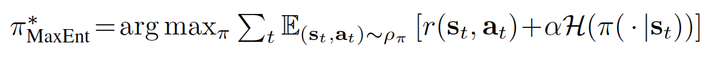where \({\alpha}\) is an optional but convenient parameter that can be used to determine the relative importance of entropy and reward. In practice, \({\alpha}\) is a hyperparameter that has to be tuned (not one to be learned during training).
By defining the soft Q function and soft V functions in equations 4 and 5 below respectively:
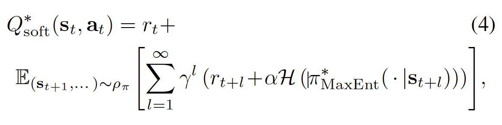 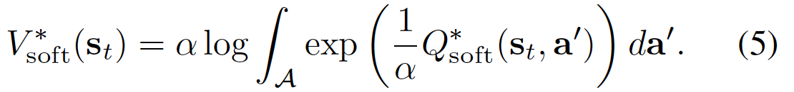The optimal policy to the above maximum entropy formulation of the policy can be proved to be:
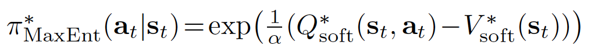The proof can be found in the appendix or from the paper Modeling purposeful adaptive behavior with the principle of maximum causal entropy <https://www.cs.cmu.edu/~bziebart/publications/thesis-bziebart.pdf>
The soft Q iteration for training expressive energy-based models is given by the following theorem (Theorem 3 in the paper):
Theorem: Let \(Q_{\text{soft}(\cdot, \cdot))\) and \(V_{\text{soft}(\cdot))\) be bounded and assume that \(\int_{\mathcal{A}} exp(\frac{1}{\alpha} Q_{\text{soft}}(\cdot, a^{'}) ) \,da^{'} < \infty\) and that \(Q^{*}_{\text{soft}} < \infty\) exist. Then the fixed-point iteration
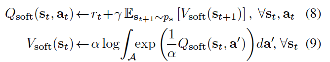converges to \(Q^{*}_{\text{soft}} and V^{*}_{\text{soft}}\) respectively.
However, there are several practicalities that need to be considered in order to make use of the algorithm to solve real world problems. First, the soft Bellman backup cannot be performed exactly in continuous or large state and action spaces, and second, sampling from the energy-based model in (6) is intractable in general.
To convert the above theorem into a stochastic optimization problem, we first express the soft value function in terms of an expectation via importance sampling:
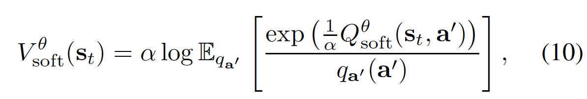where \(q_{a'}\) can be an arbitrary distribution over the action space.
By noting the identity \(g_{1}(x)=g_{2}(x) \forall x \in \mathbb{X} \Leftrightarrow \mathbb{E}_{x\sim q}[((g_{1}(x)-g_{2}(x))^{2}]=0\) , where q can be any strictly positive density function on \(\mathbb{X}\), we can express the soft Q-iteration in an equivalent form as minimizing
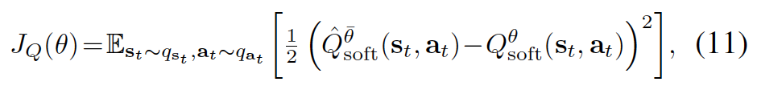where \(q_{s_{t}}\) and \(q_{a_{t}}\) are positive over \(\mathrm{S}\) and \(\mathrm{A}\) respectively.
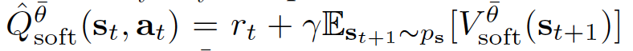is a target Q-value, with \(V^{\bar{\theta}}_{\text{soft}}\) given by the equation 10 and \(\theta\) being replaced by the target parameters, \(\bar{\theta}\).
While the sampling distributions \(q_{s_{t}}\), \(q_{a_{t}}\) and \(q_{a'}\) can be arbitrary, we typically use real samples from rollouts of the current policy \(\pi(a_{t}|s_{t}) \propto exp(\frac{1}{\alpha} Q_{\text{soft}}^{\theta}(s_{t},a_{t}))\).
However, in continuous spaces, Since the form of the policy is so general, sampling from it is intractable - We still need a tractable way to sample from the policy. Here is where SVGD comes in.
Formally, we want to learn a state-conditioned stochastic neural network \(a_{t}=f^{\phi}(\xi,s_{t})\) parametrized by \(\phi\), that maps noise samples \(\xi\) drawn from a normal Gaussian, or other arbitrary distribution, into unbiased action samples. We denote the induced distribution of the actions as \(\pi^{\phi}(a_{t}|s_{t})\) and we want tp find parameters \(\phi\) so that the induced distribution approximates the energy-based distribution in terms of the KL divergence.
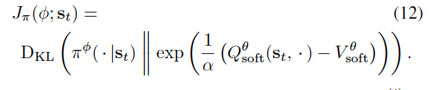Practically, we optimise the policy by the following two equations:
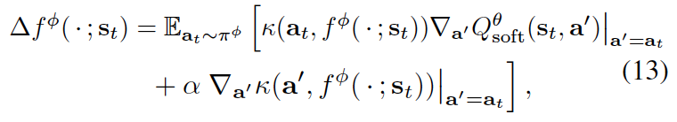 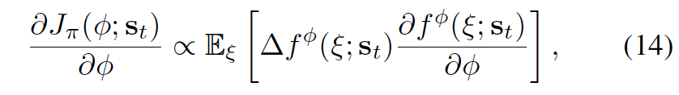Pseudo-code¶
The pseudo code is as follows:
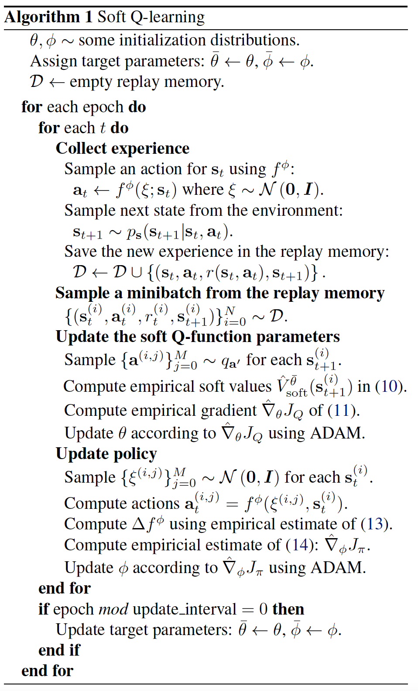Where the equation 10, 11, 13, 14 can be referred from the above section.
Extensions¶
SQL can be combined with:
Exploration techniques such as epsilon-greedy or OU Noise (implemented in the original paper; Please refer to Continuous control with deep reinforcement learning and On the theory of the Brownian motion) to enchance explorations.
Some analysts draw connection between Soft Q-learning and Policy Gradient algorithms such as Equivalence Between Policy Gradients and Soft Q-Learning.
SQL can be combined with demonstration data to propose an imitation learning algorithm: SQIL proposed in SQIL: Imitation Learning via Reinforcement Learning with Sparse Rewards. Please also refer to SQIL code <https://github.com/opendilab/DI-engine/blob/main/ding/policy/sql.py> for a DI-engine implementation.
Implementations¶
The default config is defined as follows:
Benchmark¶
The table below shows a benchmark of the performance of DQN, SQL (in discrete action spaces), and SQIL in Lunarlander and Pong environments.
env / method |
DQN |
SQL |
SQIL |
alpha |
|---|---|---|---|---|
LunarLander |
153392 / 277 / 23900 (both off) 83016 / 155 / 12950 (both on) |
693664 / 1017 / 32436 (both off) 1149592 / 1388/ 53805 (both on) |
35856 / 238 / 1683 (both off) 31376 / 197 / 1479 (both on) |
0.08 |
Pong |
765848 / 482 / 80000 (both on) |
2682144 / 1750 / 278250 (both on) |
2390608 / 1665 / 247700 (both on) |
0.12 |
Note
The stopping values for Lunarlander and Pong are 200 and 20 respectively.
both on：cuda = True； base env manger = subprocess
both off：cuda = False； base env manager = base
References¶
Haarnoja, Tuomas, et al. “Reinforcement learning with deep energy-based policies.” International Conference on Machine Learning. PMLR, 2017.
Uhlenbeck, G. E. and Ornstein, L. S. On the theory of the brownian motion. Physical review, 36(5):823, 1930.
Lillicrap, T. P., Hunt, J. J., Pritzel, A., Heess, N., Erez, T., Tassa, Y., Silver, D., and Wierstra, D. Continuous control with deep reinforcement learning. arXiv preprint arXiv:1509.02971, 2015.
Schulman, John, Xi Chen, and Pieter Abbeel. “Equivalence between policy gradients and soft q-learning.” arXiv preprint arXiv:1704.06440 (2017).
Siddharth Reddy, Anca D. Dragan, Sergey Levine: “SQIL: Imitation Learning via Reinforcement Learning with Sparse Rewards”, 2019.
Ziebart, B. D. Modeling purposeful adaptive behavior with the principle of maximum causal entropy. PhD thesis, 2010.